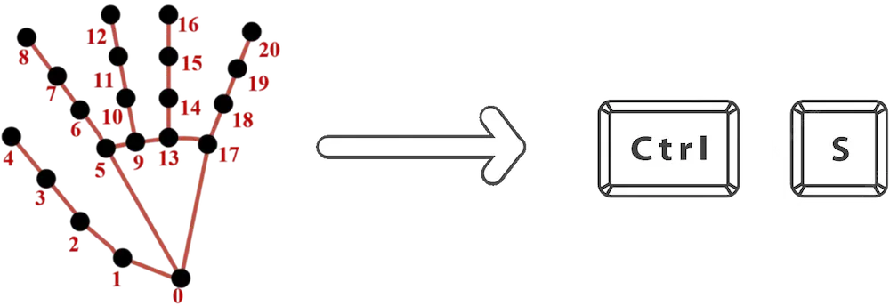
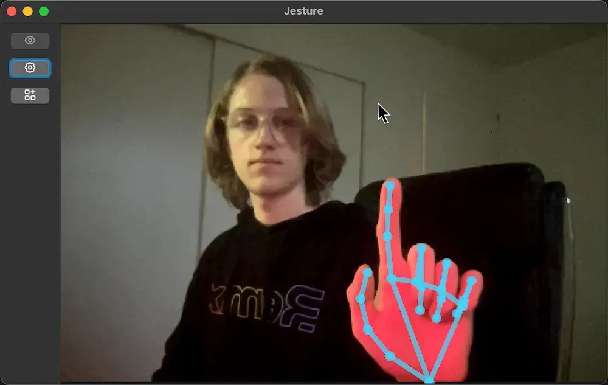
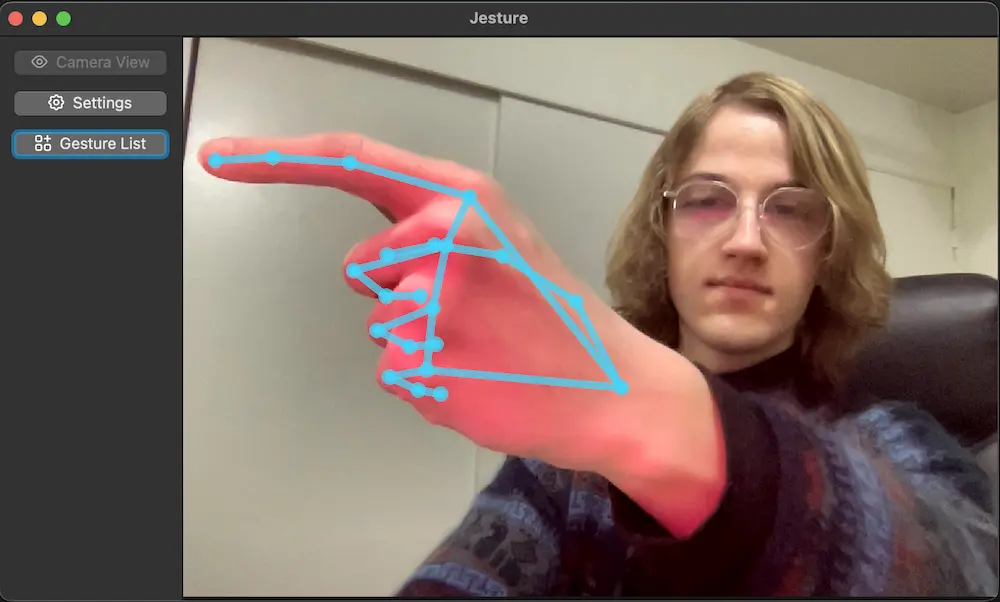
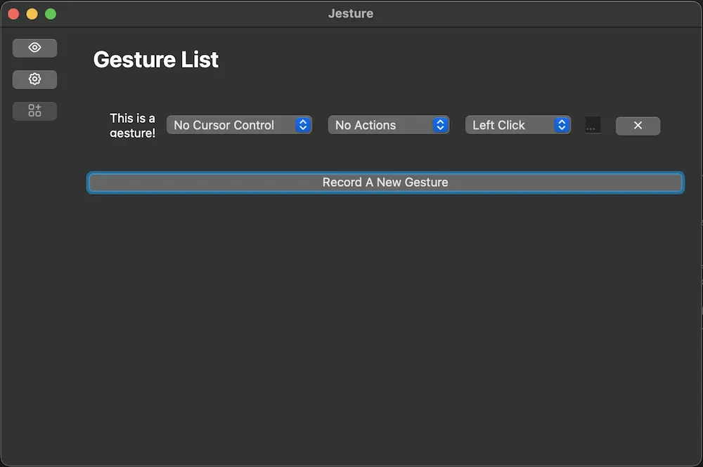
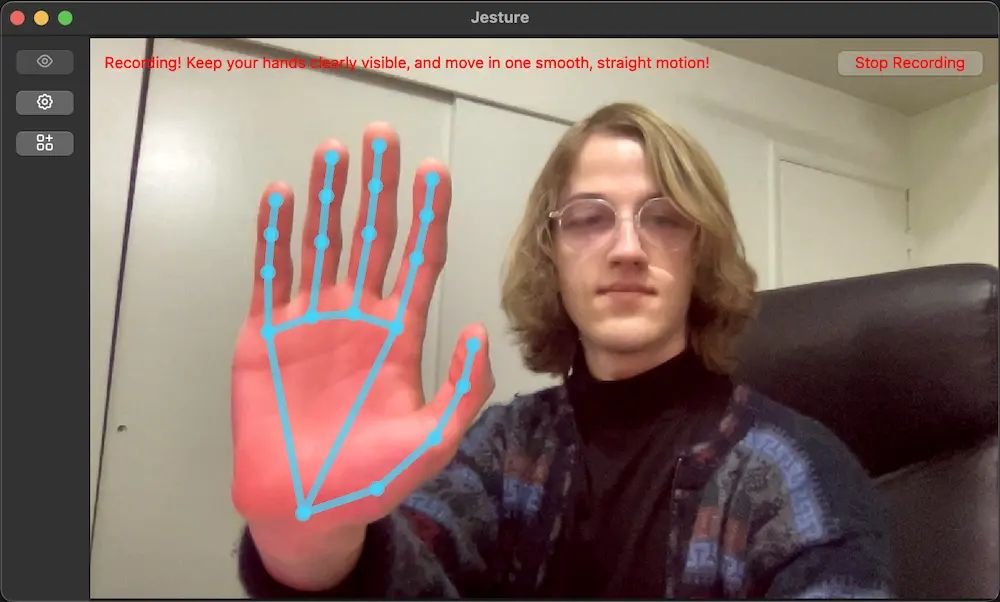
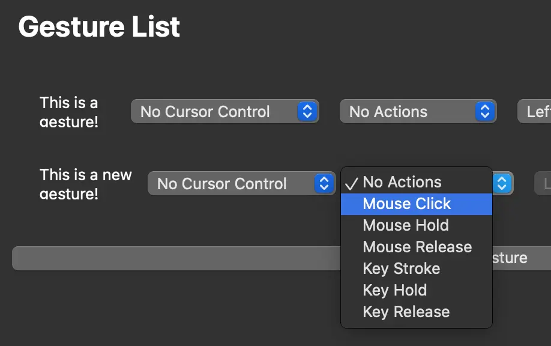

Control your computer with your hands, not your keyboard.
Download for Linux (Debian)Jesture is a desktop app that uses computer vision to read your hands, and will perform keyboard or mouse events for you when it sees a gesture.
Think pressing escape when you curl your hand into a fist, or moving the mouse to follow your hand when you point upwards.

sudo apt-get install ./(path to download)
Open the app up, go to the gesture list on the side.
Change the gestures here to your desired keybindings. Or, record a new gesture.
Perform your gesture in front of the camera! Press spacebar or click the "stop recording" button when finished.
After naming and confirming your gesture, you will see it in the list. Map the controls to whatever you like.
Despite our best efforts, the app's gesture recognition isn't 100% accurate. If you try a gesture once and it nothing happens, try again! If it still doesn't work, try recording the gesture again.
Four seniors from the University of Utah worked on this project from Fall 2022 to Spring 2023 as a "capstone" project to finish off their degree.
Aish is a computer science student with a math minor at the University of Utah. In Jesture, Aish worked on the gesture recognizer. This involved processing frames and developing an algorithm to recognize gestures precisely and accurately. Her main interest lies in the field of natural language processing. Currently, she is doing an independent study with Prof. Riloff at the University of Utah on sentiment analysis of similes. Her future plans involve pursuing a Masters in CS to learn more about NLP and Deep Learning.
Carson is a computer science and mathematics student. He's going on to get a Masters in mathematics at the University of Utah in the fall of 2023. Carson was responsible for pipeline, user interface and simulated user input components of the application. He wrote an API that interacts with the X display server on the users machine, designed the framework we use for synchronizing dataflow and recognizing gestures, as well as a substantial portion of the user interface.
James is a computer science student, pursuing a career in computer graphics. Other interests include generative AI, computer vision, and game development. He is enrolling in the Masters program at Utah in Fall 2023 to get a specialized Graphics degree. James was responsible for the UI of the project, and built a few trials using different platforms and frameworks. When the decision to settle on Qt was made, he wrote a large portion of the interface.
Manya is a computer science student at the University of Utah. She will be working in the industry as a software engineer after graduating and is interested in applications of machine learning and natural language processing. Manya worked on the backend side of the project and was responsible for the gesture recognition component of Jesture which involves processing video frames received by the user interface and an efficient algorithm to detect gestures. This also includes providing users with the option to record custom gestures of their choice.